Introduction
Howdy fellow Customer!
At first, we would like to thank you for choosing our script. We have prepared an user-friendly documentation especially for you, to help you quickly install Social Match Script.
We hope that work with our script won't bring you difficulties and it will be an easy task.
We've done our best in making Social Match and hopefully you will love it as much as we do. Your opinion is very important for us and we will appreciate if you can rate and review Social Match on CodeCanyon (please check details how you can do it in FAQ section).
Remember to always check the latest changes in our main site.
Preparation
Make sure your hosting have the following:
- PHP 5.x
- MySQLi Extension
If you dont own a hosting yet, i fully recommend Site5
With Site5 and Social Match you will not have troubles of any kind.
Installation
After downloading and extracting the zip package you will find folders and files.
In order to start working with our script, please follow these steps to setup Social Match:
-
Create a database with your Hosting Cpanel for import the Social Match tables
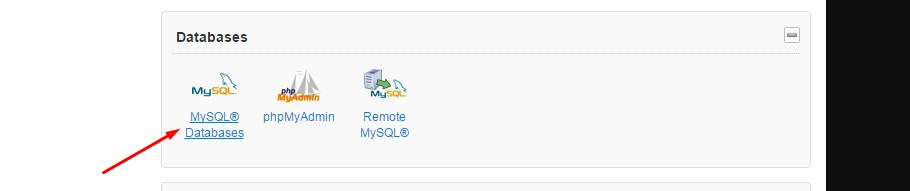
-
Select your database and import sql.SQL file from MySQL File folder into your MySQL database using the import function available in MySQL phpMyadmin.
Here's a preview of what your MySQL phpMyAdmin might look like:
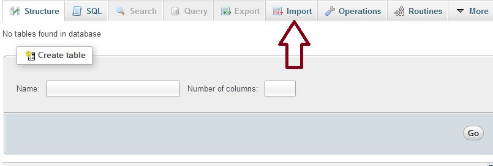
-
Using a text editor, open the files 'config.php' located inside the "SM Script/assets/includes/" folder, in config.php replace what's between the brackets( ' ' ) with your MySQL settings. Here's a preview of the content of 'config.php':
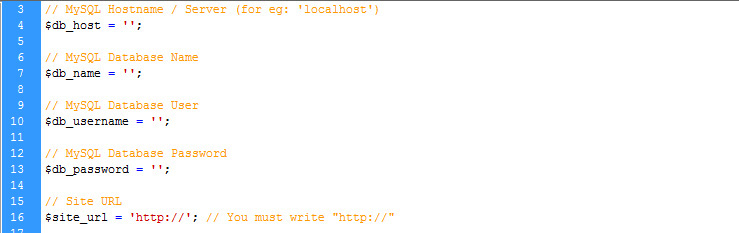If your domain is SSL protected remember to put HTTPS:// in $site_url variable
- Upload the files from the "SM Script" folder on the FTP server (usually public_html folder when installing it on a domain)
- Set the CHMOD to 777 or 775 (depending on the server configuration) to the folder 'uploads' located in 'assets/sources/'
Google Maps API JavaScript
This step is important if you dont do this, visitors will not be able to create new accounts
-
Go to your site and login with the default admin account
Login: admin@sm.com
Password: sm2016 -
Go to General settings and click in GET API KEY button
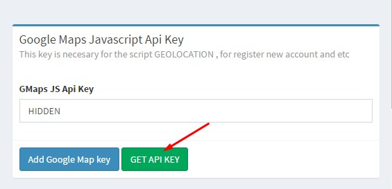
- Create or select a project.
- Click Continue to enable the API and any related services.
- On the Credentials page, get a Browser key (and set the API Credentials).
Note: If you have an existing Browser key, you may use that key.
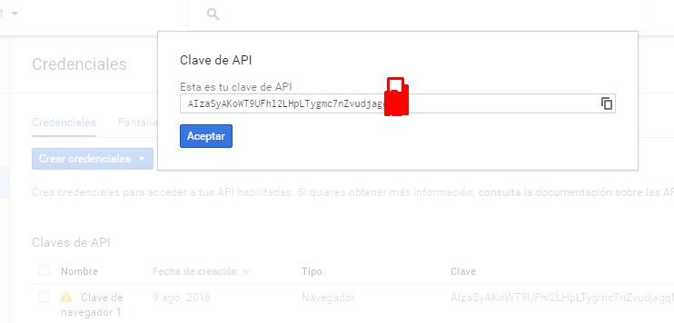
-
Paste the Key and click in Add Google Map Key
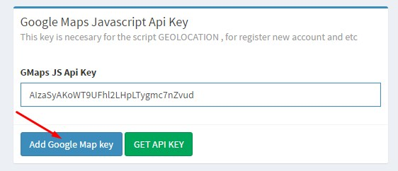
Videocall Server
For make the videocalls your site needs a peerjs server, you can easly run your own hosted in Heroku for free Deploy the server to Heroku clicking in the image bellow

Now, if you already have an Heroku account login, if you dont create a new account
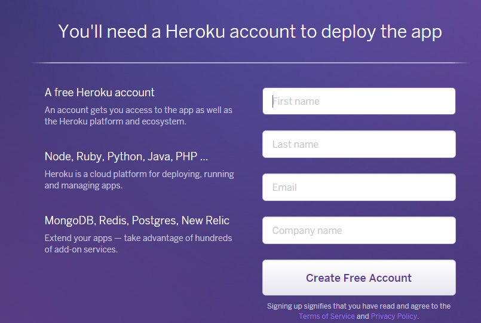
After you create and verify your account, you will see this.
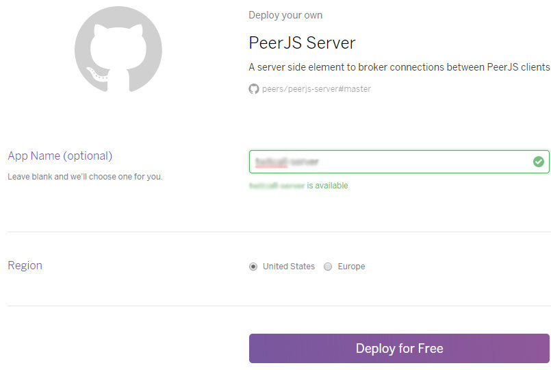
App name: Your app name
Region: Choose the best option for your site
Fill that information and click in Deploy for free, and then wait until Heroku deploys the server
When the server is ready , you will see this message
"Your app was successfully deployed. View it, or make your first edit."
Click in View it and that will be your videocall server domain.
Now go to the admin panel (http://your-site.com/admin) and configure your Videcall server in General Settings
Add your videocall server without the "https://"
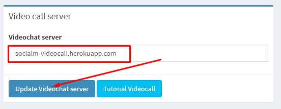
Leave the field blank for remove the videocall function
If your domain is not SSL certified (not https) the videocall will not work on Chrome
Amazon AWS S3 Storage
Reduce your hosting load with this awesome feature
directly send the uploaded photos to your Amazon S3
If you dont know what is Amazon AWS S3 check it outhere
- First of all we need a Amazon S3 bucket, if you already have one skip this step if you dont create a new s3 bucket
go to this link and click in Create bucket
- Now we need the credentials go to Amazon Security and credentials
- Click in Access Keys (Access Key ID and Secret Access Key) and then in Create new access key
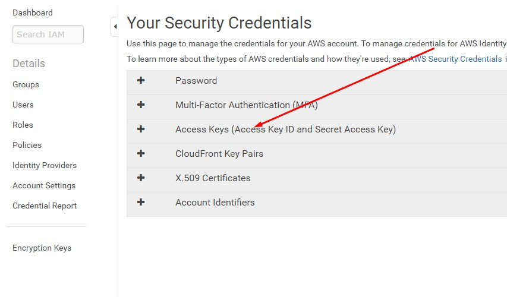 - Now you have all the required data
go to the admin panel/general settings and add the information
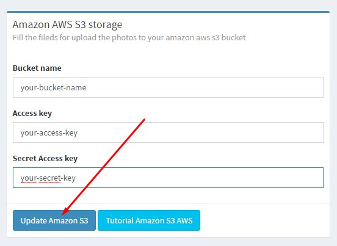
Leave all the fields empty to use regular upload system to your hosting
Payments Settings
Go to payments settings in the admin panel for configure all the payments options
Paypal
Add your PayPal ID or PayPal Email for receive payments
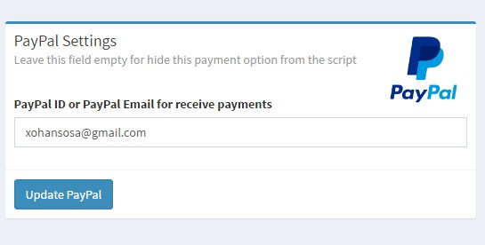Leave this field empty for disable this payment method
Stripe
You need to add your Stripe Secret Key and Stripe Publishable Key
Go to your Stripe dashboard and click in Accounts Settings / API Keys
Now go to the admin panel and add the information, use the live keys
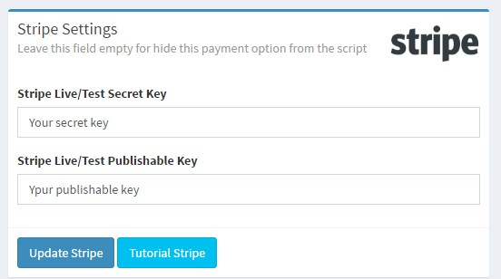Leave the fields empty for disable this payment method
Fortumo SMS Payment
Go to Fortumo Dashboard and click in Create service
and then select the option Cross-Platform Mobile Payments
Now just fill all the fields and move to the next page
In the last step there is a field called To which URL will your payment requests be forwarded to? there you must add a link like this one http://yourpage.com/assets/sources/fortumo.php
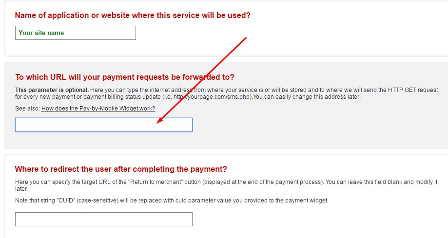
For my demo site i had to put there https://www.premiumdatingscript.com/smdemo/assets/sources/fortumo.php
Then click in next and confirm the countries terms of use and them click in confirm
You will be redirected to the setup page of your service, click in general and there will your service id and key information

Now you can add your Fortumo Service ID and Fortumo Service Secret in the admin panel
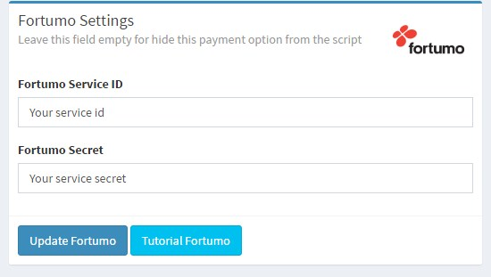Leave the fields empty for disable this payment method
PayGol
Now you will never lose a client, accept SMS payment for dating site is just the best of the best,
you can withdraw your earrings to Skrill and Bank wire
Lets crete a PayGol app
Step 1 - go to PayGol Register create your account and login to PayGol

Step 2 - For create your Service Id click here https://www.paygol.com/webapps
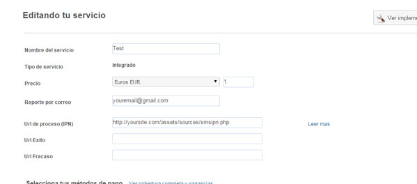
- Fill the field Name of service
- Also fill the field Mail report (it will notify you by email when someone pays with SMS)
- And for the last one and the most important fill in the field url of Proccess IPN
Here you have to add your site domain + /assets/sources/smsipn.php
for example i have it like this for the demo https://www.premiumdatingscript.com/smdemo/assets/sources/smsipn.php - The price and the currency you manage it from the Admin Panel of Social Match
- Now go to the bottom of the page and click in Save

Now go to the admin panel and configure your PayGol SMS
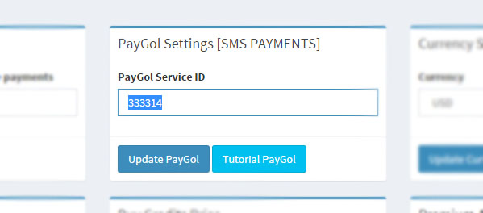
Social Connect Settings
Go to general settings in the admin panel for configure all the social connect options
Facebook Connect
Ok, lets create a Facebook app
Step 1 - go to Facebook developers and click in Add a New App
- Choose Website
- Choose Name for you App and Click Create New Facebook App ID
- Choose a category for you App and click Create App ID
- Now Click Skip Quick Test
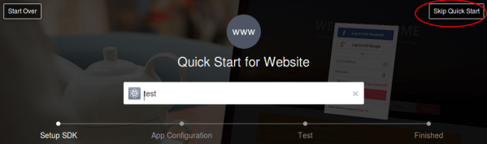
Step 2 - Under settings, Provide values for App domain ( Eg:www.yoursite.com ) and Contact Email and click Add Platform. Now you have to fill the form.
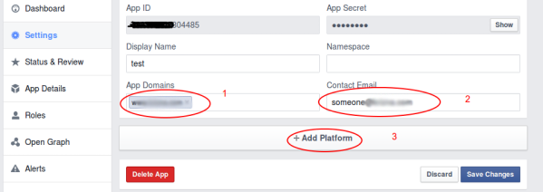
Provide Values for Site URL (Required) and Mobile site URl ( Optional )
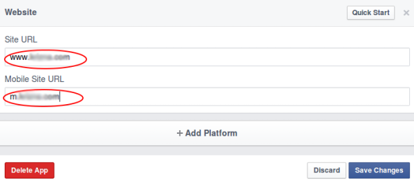
Step 3 - Now under Status & Review, Click the button to make you App live .
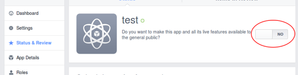
Step 4 - Go back to Settings and there is your APP KEY and APP SECRET.
Now go to the Admin panel/General Settings and configure your FACEBOOK CONNECT
Leave the fields empty for disable facebook connect method
Twitter Connect
Step 1 - Go to Twitter apps and click in Create New App
Step 2 - Fill all the fields and in Callback url you have to add your site domain + /assets/sources/twittercallback.php for example put this for the demo https://www.premiumdatingscript.com/smdemo/assets/sources/twittercallback.php
Step 3 - Click in Key and access token and there is your information
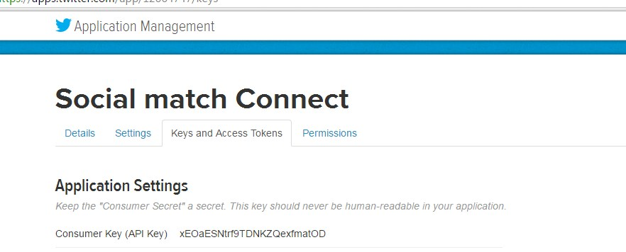
Now go to the Admin panel/General Settings and configure your Twitter CONNECT
Leave the fields empty for disable twitter connect method
Google connect
Before you can integrate Google Sign-In into your website, you must have a Google API Console project. In the project, you create a client ID, which you need to call the sign-in API.
To create a Google API Console project and client ID, follow these steps:
Step 1 - Go to Google API Console
Step 2 - From the project drop-down, select an existing project
or create a new one by selecting Create a new project.
Step 3 - In the sidebar under "API Manager", select Credentials,
then select the OAuth consent screen tab.
Step 4 - In the Credentials tab, select the New credentials drop-down list,
and choose OAuth client ID.
Step 5 - From the resulting OAuth client dialog box, copy the Client ID and Secret Key.
Now go to the Admin panel/General Settings and configure your Google CONNECT
Leave the fields empty for disable Google connect method
Instagram Connect
Step 1 - Go to Instagram developers dashboard and click in Register New Client
Step 2 - Fill all the fields and in Valid redirect URIs: you have to add your site domain + /assets/sources/instagram.php for example i put this for my demo site https://www.premiumdatingscript.com/smdemo/assets/sources/instagram.php
Step 3 - Click in Register and then you will find the and the Client Key
Now go to the Admin panel/General Settings and configure your Instagram CONNECT
Instagram by default creates the app in sandbox mode (only the admin and test users), you have to Start a submission in order to make the instagram connect public to all
Leave the fields empty for disable Instagram connect method
Support
We’re truly appreciate that you've chosen our item(s). Customer satisfaction is our priority and we understand that sometimes you need help. We provide friendly and helpful support for all our items.
You can reach us using our ticket system - please go to PDS Support Center.
Support for our customers is provided on business days: Mon-Fri 10:00am-6:00pm (GMT +3). Standard reply time is within 24-48 hours.
Don't hesitate to ask, we are here to help you!
FAQ
Q: How can I rate your item?
A: Click on Downloads tab in your CodeCanyon profile page. There you will be able to rate our item. If you want to rate our item with 4 or less stars, please let us know why you do this. We just want to know about your opinion. This will help us to improve our items in future.
Q: How can i enter into the admin panel?
A: After you finish the installation of the script,
go to your site and login with the default admin account
Login: admin@sm.com
Password: sm2016
Q: I have problems/questions related to the script, how can I contact you?
A: You can live chat with us 24/7 on our main site Premium Dating Script
Changelog - ver. 3.0
- ver. 3.0 (10.08.2016)
- Added multilanguage support to Email notifications
- Added auto set visitor language by location and avaliable languages
- Added plugin for upload the photos to Amazon S3 bucket
- Added Fortumo Payment for SMS
- Added Stripe Payment for credit cards
- Added connect with Twitter
- Added connect with Google
- Added connect with Instagram
- Added give free premium days to users from the admin panel
- Added SMTP email test function for check if its working fine
- Added option for enable/disable languages
- Added user interests
- Added users extended information for more complete profile
- Added show days left for premium users
- Added sound for videocall on call and on incoming call
- Improved videocall system
- Fixed discover game bug
- Fixed long terms and privacy text bug
- Fixed Google geolocation api bug
- Fixed name in photo comments link bug
- Fixed emoji repeat message bug
- Fixed design bug when someone tries to see a profile without account
- Fixed delete photo animation
- Fixed premium users daily chat limit
- Fixed error messages when someone tries to register or login
- Fixed // url bug
- Fixed city short name , now it shows the long name
- Fixed multilanguage system, now 100% of the script is multilanguage
- Fixed some CSS bugs
- Fixed recover password , now its SMTP based